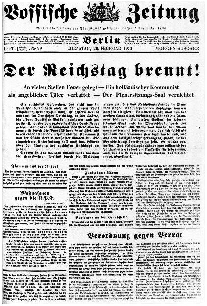

A42-POL-041 // HISTORICAL CLAIM REVIEW
The Reichstag Fire and Nazi Emergency Powers
Assessment: The authoritarian exploitation of the fire is certain.


The precise allegation
The Reichstag burned in Berlin on February 27, 1933. Marinus van der Lubbe was convicted, but whether he acted alone remains disputed. The Nazi government exploited the fire to suspend civil liberties and arrest opponents. Claims that Nazi leaders secretly staged the arson are plausible to some scholars but not conclusively proven by surviving evidence.
Chronology and political context
Van der Lubbe was arrested at the scene. Hitler's cabinet secured the Reichstag Fire Decree the next day, enabling mass detention and censorship. A trial in 1933 acquitted several alleged accomplices but convicted van der Lubbe. Nazi authorities used the event to dismantle democratic protections before consolidating one-party rule.
Primary historical record
The trial record, police reports, decree, and Nazi administrative documents establish van der Lubbe's presence and the political exploitation of the fire. The Nuremberg record includes postwar testimony about SA activity, but these statements were given amid shifting loyalties. The physical scene and forensic methods available in 1933 could not reliably determine whether one or several fires were set.
Corroboration and contrary evidence
Historians such as Benjamin Hett argue evidence points toward Nazi involvement, while other scholars conclude van der Lubbe probably acted alone or that the case remains unresolved. The decisive issue is not whether Nazis benefited—they clearly did—but whether independent physical or documentary evidence links leadership to the arson. Political opportunism is well documented; authorship is not settled.
What remains uncertain
The fire's exact ignition sequence, van der Lubbe's capacity to set multiple fires, and potential accomplices remain unclear. Nazi security structures destroyed records and controlled the trial environment. Later confessions and recollections conflict. Evidence of a conspiracy should be separated from the indisputable fact that the regime used the crisis to suppress opponents.
Calibrated verdict
The authoritarian exploitation of the fire is certain. Van der Lubbe's role is established, but the proposition that Nazi leaders ordered the fire remains contested rather than proven. A prudent verdict is unresolved authorship, with meaningful evidence for and against accomplices, and overwhelming documentation of the emergency decree's political purpose.
What evidence could change this assessment
A contemporaneous operational order, reliable eyewitness account corroborated independently, or forensic evidence of a coordinated arson plan would resolve the question. A fuller, authenticated prewar SA record could establish planning; new evidence confirming van der Lubbe's sole capability and route could strengthen the lone-actor account.
Sources and source limits
- German Historical Museum — Reichstag FireMuseum chronology and contextual materials; the broad portal does not decide the contested authorship question.
- Benjamin Carter Hett, Burning the Reichstag (Oxford University Press)Makes a detailed argument for Nazi involvement; influential scholarship, but its interpretation is contested by other historians.
- Richard J. Evans, The Coming of the Third Reich (Penguin Random House)Synthesizes the rise of Nazism and emergency response; broad history rather than a dedicated forensic analysis of the fire.